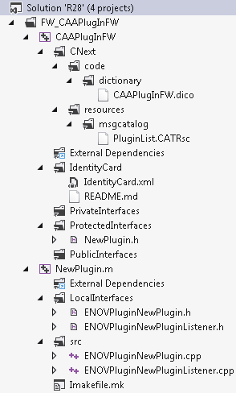

In the Solution Explorer, right click the project named with the framework name, that is, NOT the node prefixed with FW_, and containing the framework to which you want to add a plugin module.
In the contextual menu, point to Add, and click
 New Item.
New Item.
The Add New Item dialog box opens.
In Installed, click the
 arrow
in front of 3DS Templates to expand its contents, if not yet expanded.
arrow
in front of 3DS Templates to expand its contents, if not yet expanded.
Click ENOVIAV5.
The ENOVIAV5 installed templates are displayed in the central pane.
In the central pane, click
 CATPlugIn.
CATPlugIn.
In the Name box, type the name you want to assign to the plugin module.
Warning: This name is
used to create the test file name. Bear in mind that:
|
Click Add.
The plugin is created.
| Warning: If you do not see all the created folders and files, in the 3DS Workspace Explorer, right click the framework name, and click Refresh Solution. |
Assume that the plugin name is NewPlugin. The framework includes now the following:
| Folders and Files in the Solution Explorer | Description | |||||||||||||||||||||||||||||||||||||||||||||||||||||||||||||||||||||
|---|---|---|---|---|---|---|---|---|---|---|---|---|---|---|---|---|---|---|---|---|---|---|---|---|---|---|---|---|---|---|---|---|---|---|---|---|---|---|---|---|---|---|---|---|---|---|---|---|---|---|---|---|---|---|---|---|---|---|---|---|---|---|---|---|---|---|---|---|---|---|
|
 |
|
|||||||||||||||||||||||||||||||||||||||||||||||||||||||||||||||||||||
Open the IdentityCard.xml file and add the VPMInterfaces framework as a public prerequisite.
You can now generate in this plugin module:
- An ENOVIA event listener: see Generating an ENOVIA Event Listener.
- An ENOVIA user exit: see Generating an ENOVIA User Exit.